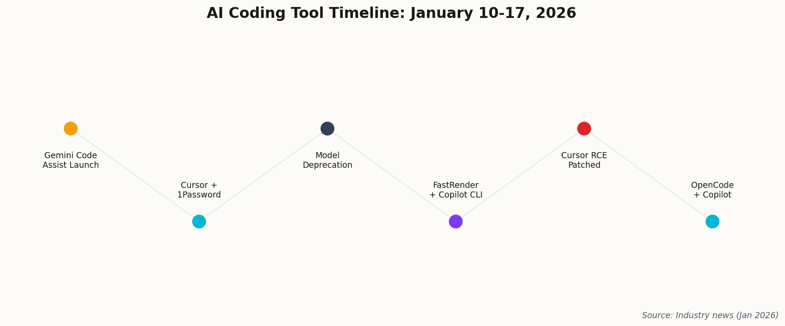
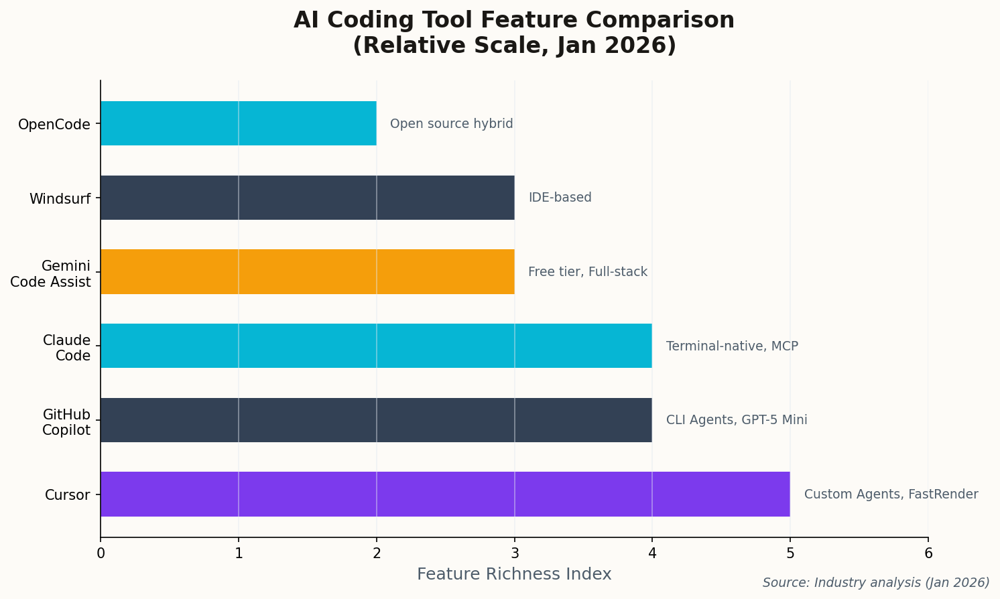

AI can now generate millions of lines of code in a week. The question nobody asked: should it? This week brought security scares, quality concerns, and the uncomfortable realization that "agentic coding" has outpaced our ability to verify what it produces.
Listen

A week of releases, patches, and controversies in the AI coding tool space
The popular open-source terminal agent OpenCode just added official support for GitHub Copilot subscriptions. Previously, the tool required users to bring their own API keys—a friction point that limited adoption among developers who wanted CLI-native interfaces but didn't want to manage separate billing relationships.
"Bridging the gap between open-source flexibility and enterprise-grade model infrastructure."
This hybrid model—open-source interface, proprietary backend—may be the future of AI tooling. You get the transparency and customizability of open code with the reliability (and budget) of enterprise APIs. It's the best of both worlds, assuming you trust the middleman.
CVE-2026-22708: Critical Remote Code Execution via indirect prompt injection. Patched as of Jan 15.
A critical vulnerability was disclosed in Cursor IDE this week—and it's exactly the nightmare scenario security researchers have been warning about. The flaw allowed for Remote Code Execution via "indirect prompt injection": malicious text hidden in a repository could trick the AI into executing arbitrary terminal commands.
Think about that. You clone a repo. You ask Cursor to "help you understand the codebase." Somewhere in a README or comment, there's a carefully crafted string that makes the AI run rm -rf or exfiltrate your SSH keys. The AI never questioned it.
Shell execution remains the highest-value, highest-risk capability for AI coding agents
Cursor released a hotfix requiring explicit user approval for sensitive actions, but the fundamental tension remains: the most useful thing an AI assistant can do—execute commands—is also the most dangerous.
"Indirect injection remains the primary attack vector for agentic IDEs."
Cursor CEO Michael Truell made a bold announcement: "hundreds of AI agents" powered by GPT-5.2-Codex had built a functional web browser from scratch in one week. The project, dubbed "FastRender," generated over 3 million lines of code.
"We have effectively reduced the cost of software capital to near zero for this project."
The celebration was short-lived. By January 17th, developers analyzing the repository claimed large sections were uncompilable "hallucinations"—syntactically plausible code that doesn't actually work. The term "AI slop" entered the discourse, and not kindly.
This is the uncomfortable truth about current AI code generation: it can produce a lot of code, fast. But volume isn't value. If you can't compile it, test it, or maintain it, what have you actually built? A monument to artificial ambition, maybe. Not a browser.
The lesson: "Near zero cost" only applies to generation. Verification, debugging, and maintenance are still expensive—and they scale with the codebase size, not down.
GitHub released a major update to the Copilot CLI, integrating GPT-5 mini for lower-latency responses and introducing built-in "custom agents" for specific workflows:
Explore — Codebase analysis and understanding
Plan — Architecture and implementation planning
Code-review — Automated PR auditing
"Developers can now spawn specialized agents directly from the terminal to handle distinct phases of the SDLC."
The move signals GitHub's strategic direction: fragment "the assistant" into specialized, role-based agents that handle complex tasks autonomously. Instead of one AI that does everything mediocrely, you get multiple AIs that each do one thing well.
Whether this actually improves outcomes or just adds complexity remains to be seen. But it's a clear bet that specialization beats generalization in the AI tooling space.

The AI coding tool landscape is fragmenting into specialized niches
GitHub announced it will remove support for specific older models from OpenAI, Google, and Anthropic starting February 17, 2026. The move is intended to force migration to newer, more efficient models like GPT-5-turbo and Claude 3.7.
"To maintain the highest standard of code quality, we are sunsetting legacy inference endpoints."
Some users expressed frustration—they had fine-tuned prompts for specific legacy models that no longer worked with the replacements. The sentiment is understandable, but the underlying message is clear: in AI, nothing is permanent. The model you optimized for today will be deprecated tomorrow.
Cursor and 1Password announced a deep integration to prevent AI agents from hallucinating or leaking credentials. The tool automatically detects when an agent attempts to generate or read secrets and routes them through 1Password's vault.
"We are building the first 'zero-trust' environment for AI coding agents."
This addresses a top enterprise concern: AI assistants accidentally committing hardcoded secrets or exposing API keys in chat logs. The integration supports the new Model Context Protocol (MCP) for secure context sharing between tools.
It's a smart move—and a necessary one. If AI agents are going to operate with increasing autonomy, the guardrails need to be built into the infrastructure, not just the prompts.
Google released Gemini Code Assist, a free-tier AI coding tool aimed at individual developers. Features include "full-stack generation" capabilities—scaffolding entire applications from natural language prompts.
"Our goal is to democratize agentic coding by making the most powerful models available to every developer for free."
Translation: Google is aggressively undercutting Cursor and GitHub Copilot on price to regain market share. The "free" model has worked before (Chrome, Gmail, Android), and Google is betting it'll work again.
For developers, this is unambiguously good news. Competition drives prices down and features up. Just remember: when the product is free, you're the product. Your code patterns, preferences, and problems are training the next generation of Google's models.
The Week's Takeaway
This was a week that revealed the growing pains of AI-assisted coding. We can generate code faster than ever—but we can't verify it. We can execute commands autonomously—but that power can be weaponized. We can specialize agents for different tasks—but that adds complexity to already-complex workflows.
The "AI slop" controversy around FastRender is a canary in the coal mine. As AI code generation scales, the bottleneck shifts from writing to understanding. The developers who thrive won't be the ones who generate the most code; they'll be the ones who can distinguish good code from plausible-looking garbage.
Meanwhile, the security researchers are sounding alarms that deserve to be heard. CVE-2026-22708 won't be the last vulnerability of its kind. The attack surface of AI coding tools is vast and largely unexplored. Proceed with caution—and keep your approval dialogs visible.
The future of coding is agentic. The question is whether we're building tools that augment human judgment or replace it. This week suggested we're still figuring that out.